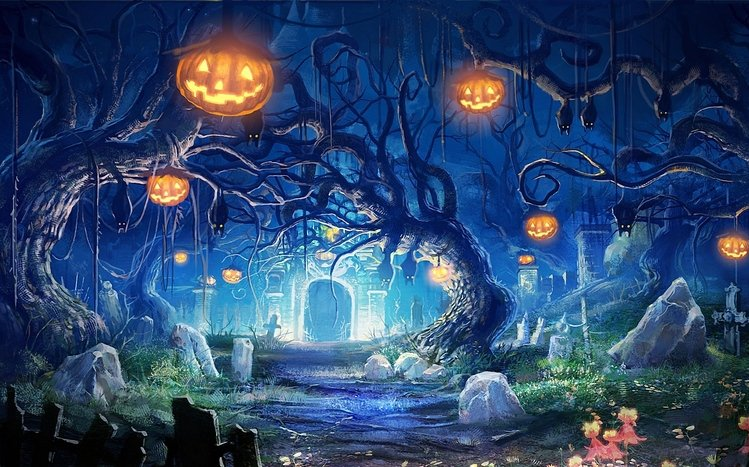
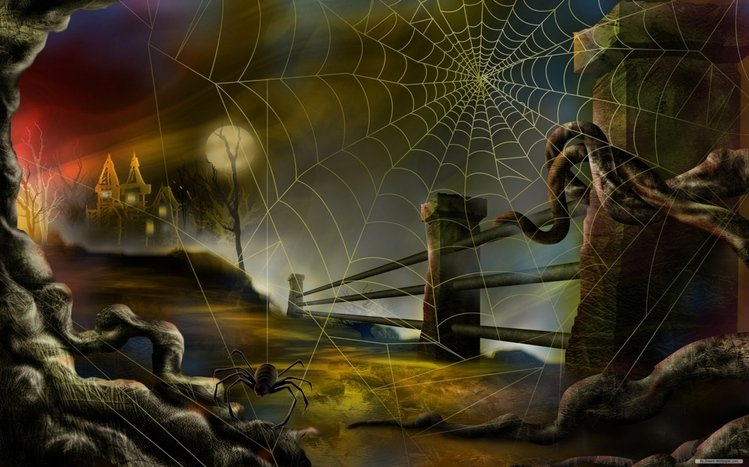
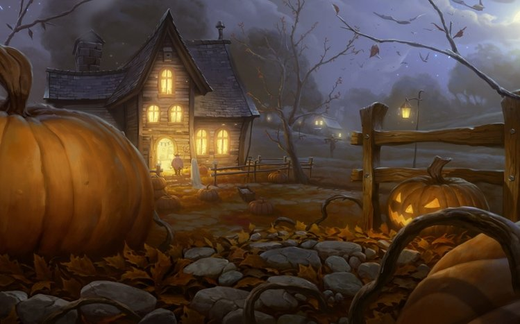

Halloween has been around for more than a thousand years. Originally a religious observance, it became increasingly secular over the centuries until its religious trappings all but disappeared. Today Halloween is considered a holiday for dress-up and fun, especially for children.
  Halloween’s origins can be traced back to the ancient Celtic festival known as Samhain, which was held on November 1 in contemporary calendars. It was believed that on that day, the souls of the dead returned to their homes, so people dressed in costumes and lit bonfires to ward off spirits. In this way, popular Halloween tropes such as witches, ghosts, and goblins became associated with the holiday.
In the 7th century CE, Pope Boniface IV created All Saints Day, originally celebrated on May 13. A century later, Pope Gregory III moved the holiday to November 1, likely as a Christian substitute for the pagan festival of Samhain. The day before the saintly celebration became known as All Hallows Eve, or Halloween.
Though the holiday began in Celtic regions of Ireland, the United Kingdom, and France, it quickly spread to other parts of the world. The first American colonists in New England were forbidden to celebrate it for religious reasons, though it enjoyed some popularity in the Southern colonies. By the 1800s, fall festivals marking the seasonal harvest incorporated Halloween elements, and Irish immigrants escaping the devastating Potato Famine brought with them many Halloween traditions that remain today.
The custom of trick-or-treating, in which children dress up in costume and solicit treats from neighbors, became popular in the United States in the early 20th century as Irish and Scottish communities revived the Old World custom of “guising,” in which a person would dress in costume and tell a joke, recite a poem, or perform some other trick in exchange for a piece of fruit or other treat. By 1950, trick-or-treating for candy had become one of Halloween’s most popular activities. Today, Halloween is one of the biggest holidays for candy sales in the United States, exceeding $2.5 billion annually.
As the leaves turn vibrant autumn shades, temperatures drop, and you start to pull out sweaters and jackets, it's time to deck out your porch with pumpkins and get to carving. Halloween, celebrated on October 31, is just around the corner, which means an evening of fun filled with costumes, spooky treats, trick-or-treating, Halloween party games, and (for adults only) boo-zy Halloween cocktails.
Amidst all the festivities, do you ever wonder about the origin and history of Halloween, such as what it its meaning and is it pagan or Christian? The answer: It's complicated—and also shaped by secular pop culture through the ages. So let's dive into fun facts about the holiday and how its most popular traditions evolved.
The current English name Halloween traces back to medieval Christianity. The word hallow is derived from the Middle and Old English words for holy. As a noun, it can also mean saint. In those days, the Christian holiday we know as All Saints' Day was called All Hallows' Day, and the day before, when an evening mass was held, was All Hallows' Eve. That three-word name eventually got shortened to Halloween.
The ancient Gaelic festival of Samhain, which occurred on November 1 but kicked off the evening before, is considered the earliest known root of some of our secular Halloween traditions. It marked a pivotal time of year when seasons changed, but more importantly, observers also believed the boundary between this world and the next became especially thin, enabling them to connect with the dead. This belief is shared by some other cultures; a similar idea is mentioned around the Jewish holiday of Yom Kippur, which also typically occurs in October and involves saying prayers for the dead. This connection to the dead is also where Halloween gains its "haunted" connotations
The path to the Christian Halloween date of October 31 is a little more complex. Pope Boniface IV began All Saints Day in the early 7th century when he dedicated the Pantheon in Rome to the saints, but the day was May 13. In the next century, Pope Gregory III changed the day to November 1 when he dedicated a chapel in St. Peter’s Basilica to the saints. Yet another century later, Pope Gregory IV added All Saints Day to the Christian calendar, extending the celebration from Rome to churches everywhere. With All Saints Day came All Hallows' Eve on October 31. This was, perhaps, an effort to offset the pagan occasion with a religious celebration.
The early pagan holiday of Samhain involved a lot of ritualistic ceremonies to connect to spirits, as the Celts were polytheistic. While there isn't a lot of detail known about these celebrations, many believe the Celts celebrated in costume (granted, they were likely as simple as animal hides) as a disguise against ghosts, enjoyed special feasts, and made lanterns by hollowing out gourds (hence, the history of jack-o'-lanterns). Over time, as Christianity took over and the pagan undertones of the holiday were lessened, the basic traditions of the holiday remained a part of pop culture every year; they simply evolved and modernized.
Top of the Page